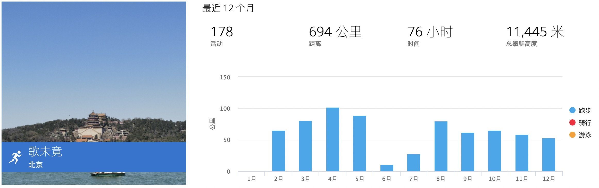
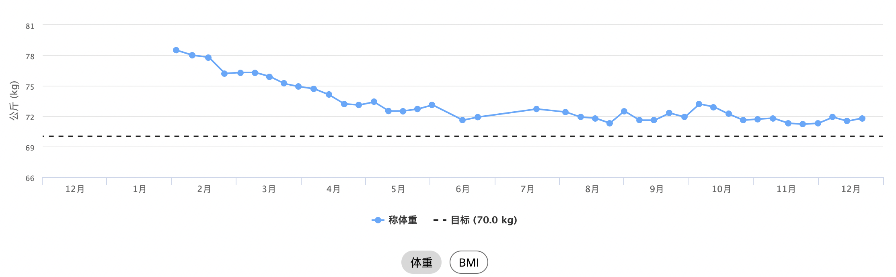
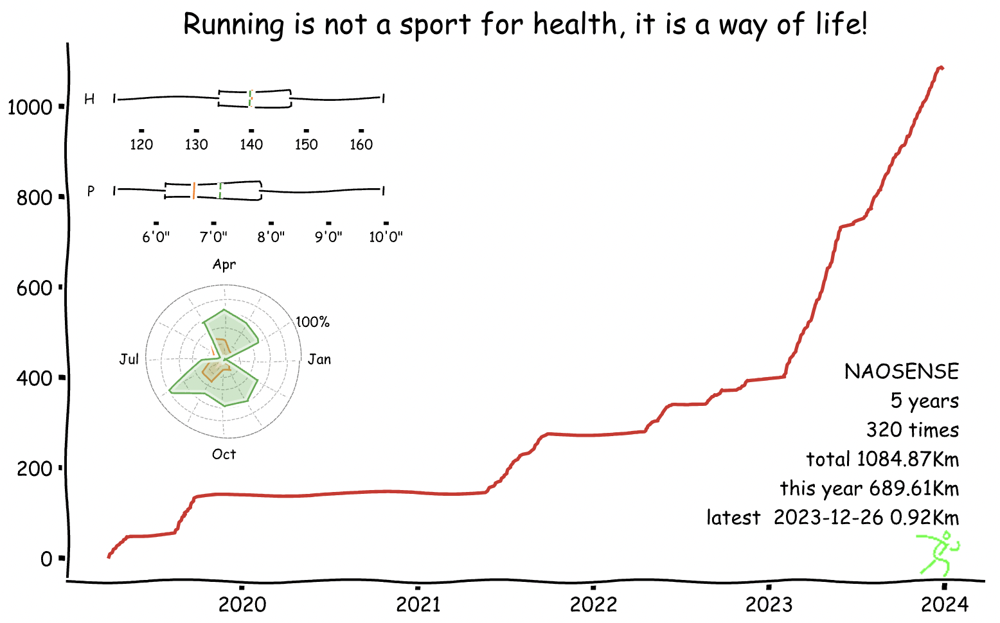
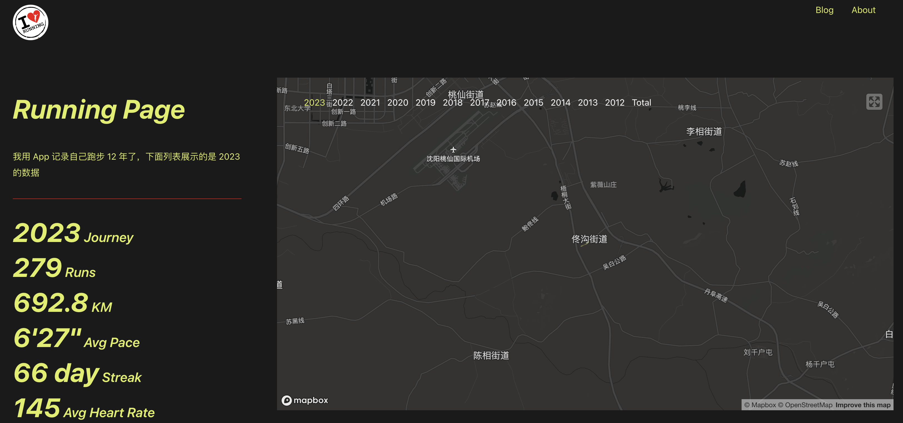
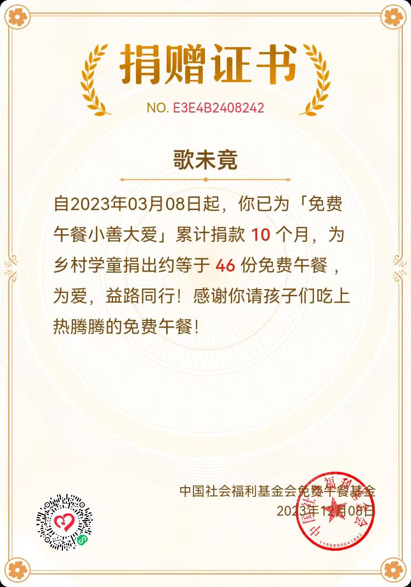

2023，程序员佛系减肥在路上
最初的动机
其实一直对体重都没怎么注意过，男的嘛，对自己身材没那么在意，只是每年买的裤子到下年就不能穿了，浪费了不少钱（笑）。
直到上年年底体检，体检报告上有一项“超重，脂肪肝（中）”，着实还是给了我一点小小的震撼。以往的体检顶多是“甘油三酯高，转氨酶高”，现在好家伙都发展成中度脂肪肝了。我当时BMI已经超过25，体重一度逼近160。
为了“为祖国健康工作五十年”的宏伟目标，我决心要把这个肥给减下去。
取得的成果
今年一年跑步历程。
今年一年体重变化。
之前异常的指标去年今年对比。
| 指标 | 2022 | 2023 | 参考值 |
|---|---|---|---|
| 体重 | 78.5 | 71.7 | – |
| 甘油三脂 | 4.24 | 1.64 | 0.45~1.70 |
| 丙氨酸氨基转移酶 | 52 | 29 | 0~50 |
| γ-谷氨酰转移酶 | 78 | 35 | 10~60 |
算下来，瘦了没几斤，但是效果非常显著。就连连续几年一直居高不下的甘油三酯和两个转氨酶也头一次正常了，这真的意想不到。
虽说这次跑步的初衷是减肥，但收获不止于此，还收获了一个附属品——恒心，所谓“一事有恒，万事渐振”。朋友都说没之前臃肿了，人的精神状态也变好了。
采取的行动
我比较懒散，因此也没制定计划。因为根据以往的经验，计划对我来说非但不会让我坚持下去可能还有反作用。每天想跑就跑，实在哪天不想跑，就不跑。
其次呢，就是晚饭不吃正餐，吃点水果。但是呢，哪天如果实在饿，也吃晚饭。也不计算卡路里摄入量这些东西，主打就是一个随性和佛系。
有人说，不吃晚饭我饿呀，饿的睡不着。你别说，我第一天没吃晚饭确实是这样子的。打工人中午这顿饭离睡觉太长了，晚上一点不吃真不行，因此我将其调整为不吃正餐，吃点水果啥的。
如何坚持
詹姆斯.克利尔在《掌握习惯》中介绍了习惯的四大定律：
- 让习惯显而易见。
- 让习惯有吸引力。
- 让习惯简便易行。
- 让习惯令人愉悦。
我上面说不制定计划，不计算卡路里，就是为了让习惯显而易见和简便易行，跑步就是简单的迈开腿跑就是了，没有距离快慢的要求。
那怎么让跑步变得有吸引力？合理利用自己的虚荣心是一种方式。比如使用一些关注长期主义的软件如miles、running_page记录自己跑步的历程。
 还可以给自己的跑步赋予更多的意义。比如将省下的饭钱捐出一些，来达到令人愉悦的目的，赠人玫瑰，手留余香嘛。
还有一招，我称之为“减量不减次”：如果哪天不想跑，不要完全不跑，而是适当的减少跑步的距离。比如你平常跑五公里，那现在就跑三公里，甚至一公里，这样可以提高放弃的门槛。你明天状态好了，还可以跑回来，避免轻易地放弃，否则很容易有“反正昨天没跑，计划已经断了，没必要再坚持了”的想法。类似于股票跌的时候不要一下子全卖掉，而是逐次抛售，万一明天涨回来你还可以继续持有。
不过话说回来，如果状态实在不好，也千万不要强迫自己。比如有时候上一天班感觉很累，那就停一天，没啥大不了。
对了，如果能够找个人结伴跑步也会有助于坚持下去。我之前在小区一个人跑，跑不多远就累了，后来和一个同事一起跑，跑得又快又轻松。
去哪里跑
我觉得作为打工人能选择的跑步地点按优先级有以下几种：
- 有跑道的公园。
- 小区道路。
- 人行辅路。
- 跑步机。
第1种可遇不可求，如果家门口或者办公地点附近有这种地方，不用说，这是首选。如果离得太远，特意过去跑步，就有点得不偿失。
第2种属于内部道路，比较安全，但是通常来说比较短，跑起来容易乏味。还有一点，小区里楼比较多，路短，根据我个人经历，GPS跟踪不太准。
第3种属于外部路，人车混杂，如果晚上跑得话，视野不好，路况不好的话容易崴脚。而且晚上这种道路上，遛狗的，送外卖的，电动车，自行车，狗绳，你都得花精力躲避，搞不好还有危险。我试着跑了一段时间，就放弃了。
跑步机的话，一般我冬天才会选择。密闭空间，跑起来比较乏味，空气也不好。
刚开始，我就在小区跑，后来发现上班的地方附近正好有个临河公园，有健身跑道，我就去那了。
早上还是晚上
作为打工人，生活在城市中，早上跑的好处是人少，视野开阔，空气好（一说早上空气并不好）；晚上跑身体机能已经完全预热，时间也比较充裕，好安排。
我现在选择的是晚上。也试过早上，给我的感觉是跑起来心跳很快，就好像身体还没完全打开，就改成晚上了。
不过大家大可不必在这个事上纠结，所谓选择困难症往往是因为“想的多，做的少”。犹豫不决的时候试下就知道，没有多少成本。
没时间怎么办
其实跑步花不了多长时间。按六分钟配速，如果跑两公里的话，跑步洗澡半小时也够了。我是不信一个人一天挤不出来半小时时间的，一集电视剧都不止半小时！
如果实在找不出成块的时间，还可以碎片式跑步，比如从家到地铁的这段路上可以利用起来。
每逢过节胖三斤
非常有道理啊。大家可以看上面的体重波动，五一、十一这些假日确实会反弹。究其原因，我个人的情况应该是过节没法正常节食，好不容易放假回趟家，父母怎么能允许你节食呢？一方面吃的多了，另一方面也不规律地跑步了，体重自然就上来了（笑）。
不过问题不大，一旦假期结束，重新跑起来，体重很快就会恢复正常。
写在最后，就像丹尼尔.利伯曼在《锻炼》中建议的那样：
为了自己的身体，动起来，为了自己的脑子，动起来。
对于大部分人，每周150分钟的中强度锻炼即可，多了没坏处，但也没多大用。大多数时间进行有氧运动，但也别忘了加入一些力量训练。
力量训练我也是从简，就是做做俯卧撑。
总之一句话，开跑有益，无论是在生理上还是心理上！